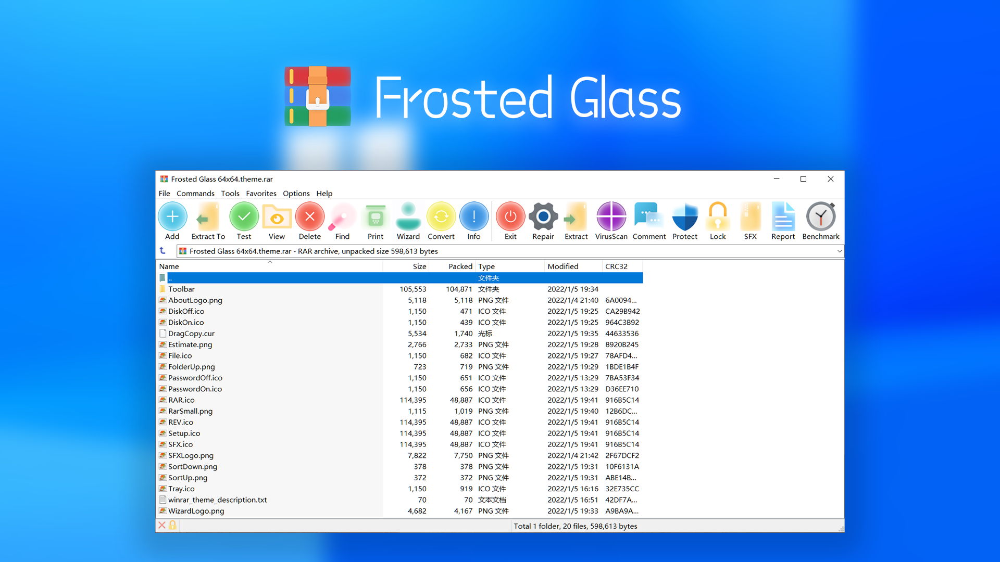
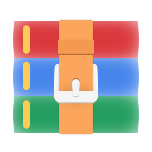

Frosted Glass Winrar Theme
A Frosted Glass Style Theme of WinRAR.
Developer
ONing


Frosted Glass
Frosted Glass Style Theme of WinRAR


1. Frosted Glass Theme
This is a theme suitable for WinRAR. It is designed according to the icon style of Windows 11 and has been frosted to make the whole bald scoop look more transparent and bright.
2. Prerequisites
This theme requires your WinRAR version 5.60 and newer.
3. Download
Available in 48x and 64x sizes, available for download on the release page.
- Frosted Glass 48x48.theme.rar
- Frosted Glass 64x64.theme.rar
It is recommended to use a 48x size for monitors below 1080p and a 64x size for monitors higher than 1080p.
5. License
The theme is available under the GPL License